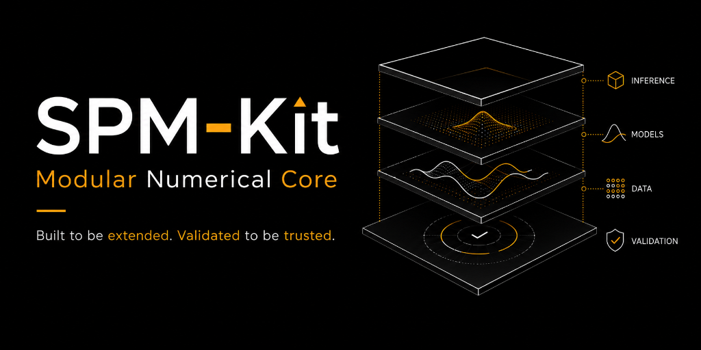

SPM-Kit Core · Numerical engine
The computation beneath every SPM-Kit workflow
SPM-Kit Core inspects files, constructs calibrated domain objects, performs declared numerical analysis and returns structured results. It is the computational source of truth used by the CLI and Fathom.
Role in one sentence¶
SPM-Kit Core is the headless, scriptable numerical engine for AFM/SPM file reading, domain models, analysis, export and plugin contracts. It is not a GUI.
Problem it solves¶
Instrument data arrive in multiple containers, units and orientations. Analysis then tends to accumulate interface state and undocumented defaults. Core puts a public numerical boundary between calibrated data and presentation so the same operation can run from a script, CLI command, test, validation subprocess or Fathom panel.
What it does¶
- inspects and loads built-in and optional AFM/SPM file formats;
- represents image channels, force curves and force volumes with physical scale;
- performs leveling, metrology, spectral analysis, KPFM, force fitting, SMFS, force-volume analysis, resonance and declared simulation paths;
- returns dataclasses or structured domain results instead of GUI widgets;
- exports CSV, JSON, figures, reports and traceability records where supported;
- exposes the
spmkitCLI and thespmkit.plugins.v1entry-point contract; - runs without a display for notebooks, batch jobs, CI, servers and HPC.
What it deliberately does not do¶
- control a microscope or guarantee safe instrument operation;
- infer missing calibration or silently invent a channel;
- turn every parser into a physically validated measurement route;
- treat visual plausibility as a scientific result;
- duplicate numerical equations inside Fathom;
- certify metrological traceability.
Data path¶
instrument file
↓
reader inspection (cheap header and content classification)
↓
calibrated SPMData / SPMChannel / ForceCurve / ForceVolume
↓
declared analysis and parameters
↓
structured result object
↓
scientific export, report and available provenance
Readers retain physical units, X/Y field of view, direction and metadata when the source provides them. Analysis functions accept domain objects, not GUI state. Result objects are dataclasses or structured containers intended to be inspected, serialized and tested.
Installation¶
python -m pip install "spmkit @ git+https://github.com/kegouro/spmkit@v0.1.4"
spmkit --version
spmkit --help
The current site documents 0.1.5.dev0; install @main for that source state.
PyPI currently serves older 0.1.2. Compare all install routes.
First successful commands¶
Inspect an existing file:
Analyze image roughness and optional CPD output:
The current CLI creates scan_roughness.csv and scan_roughness.json. When the
configured CPD channel exists it also creates scan_kpfm.csv and
scan_kpfm.json.
Fit one force curve through the current public command:
Supported model values printed by current help are sphere, paraboloid,
cone and dmt. The tip radius is in metres.
Python API¶
from spmkit import load
from spmkit.core.analysis import leveling, roughness
data = load("scan.nid")
height = data["Z-Axis"]
leveled = leveling.plane_fit(height)
result = roughness.statistics(leveled)
print(result.Sa, result.Sq, result.Sz, result.unit)
The result belongs to the explicit preprocessing route shown above. Changing leveling, channel or field of view can change the reported quantities.
Architecture¶
| Layer | Current location | Responsibility |
|---|---|---|
| Domain and computation | src/spmkit/core/ |
readers, models, analysis, export, verification, plugin contracts |
| Public CLI | src/spmkit/cli/ |
parse arguments and orchestrate Core APIs |
| Interactive workspace | src/spmkit/gui/ |
route files, configure analysis and render Core results |
| External validation | separate spmkit-validation repository |
invoke the installed CLI and preserve evidence |
The repository enforces the direction CLI/GUI → Core. Core has no GUI import
and does not depend on Fathom state.
Inputs and outputs¶
| Input | Output | Preserved scientific context |
|---|---|---|
| image-capable instrument file | SPMData with SPMChannel objects |
names, units, directions, physical ranges and source metadata where present |
| force file or force-volume container | ForceCurve / ForceVolume |
segment type/direction, calibrated axes, grid shape and calibration fields where present |
| channel + preprocessing | RoughnessResult, CPDResult, FractalResult |
values, units and result fields; caller must preserve preprocessing choice |
| force curve + model parameters | ForceCurveFit or model-specific result |
model, fitted quantities, fit statistics and configured geometry |
| resonance series | spectrum/peak/evaporation results | frequency, Q, mass assumptions and time information where supplied |
Headless versus Fathom¶
Prefer Core directly for:
- batch processing and reproducible scripts;
- servers, clusters and schedulers without a display;
- notebooks that must expose every operation;
- CI pipelines and external validation;
- embedding analysis in another application;
- reader/plugin development.
Prefer Fathom when linked views, interactive parameter selection, curve-by-curve inspection or publication layout materially improve the work. The numerical implementation remains Core in both cases.
Plugins¶
The current reader contract lives in spmkit.core.plugins.contracts and uses the
entry-point group spmkit.plugins.v1.
from pathlib import Path
from spmkit.core.plugins.contracts import DatasetInfo
class MyReader:
extensions = (".myspm",)
def inspect(self, path: str | Path) -> DatasetInfo:
return DatasetInfo(path=Path(path), format="myspm", kinds=("image",))
def load(self, path: str | Path, kind=None):
...
Package metadata then registers the object under spmkit.plugins.v1. A reader
must preserve units, calibration, orientation and failure semantics. A fixture
demonstrates parsing behavior; it does not validate all analyses applied later.
Integration¶
- Fathom → Core: in-process public calls; implemented.
- Validation → installed CLI: process-isolated system-under-test route; implemented for declared campaigns.
- Phantoms → Core: exported arrays can be loaded for algorithm recovery; documented manual handoff and validation campaign use.
- Data Hunter → Core: a reviewed native file may become a reader fixture; manual and rights-dependent.
Scientific status¶
| Area | Current strongest public statement |
|---|---|
| Core software behavior | automated repository tests; capability-specific LEVEL 1 |
| Physical-model recovery | deterministic synthetic recovery; capability-specific LEVEL 2 |
| Sa/Sq/Sz metric route | retained Gwyddion campaigns support scoped LEVEL 3 claims |
| Experimental formats | maturity varies; see the format matrix |
| Physical/interlaboratory validation | incomplete; no general LEVEL 4/LEVEL 5 claim |
Read the capability matrix and format maturity before interpreting a result.
Limitations¶
- Current CLI help and several messages remain Spanish-first.
- PyPI lags the GitHub release and this development documentation.
- Optional formats depend on third-party packages and may have narrower evidence.
- Result serialization is not uniform across every analysis path.
- Provenance coverage is improving; preserve command, parameters and input hash yourself when a path does not emit a full manifest.
- The current evidence does not support universal equivalence with Gwyddion or any instrument vendor.
Contribute¶
High-value contributions include lawful native-format fixtures, reader implementations with explicit units/orientation, numerical recovery cases, improved result provenance and narrow external campaigns. Start with Extending and Contributing.